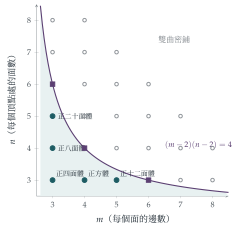

STEP III 1999，第 4 題
繼續之前，請先閱讀題目（原題為英文）。題目載於 STEP Support Programme 的題目資料庫： step.maths.org/questions/99-s3-q4
引子
正多邊形（regular polygon）有無窮多種：三角形、正方形、五邊形，如此類推，任何邊數都有。你或會以為正多面體（regular polyhedron）也有無窮多種。其實恰好只有五種：正四面體（tetrahedron）、正方體（cube）、正八面體（octahedron）、正十二面體（dodecahedron）和正二十面體（icosahedron）。柏拉圖（Plato）把其中四種與四大元素（火、土、氣、水）對應，第五種則對應宇宙；歐幾里得（Euclid）的《幾何原本》（Elements）是有史以來影響最深遠的數學著作，全書最後就是證明再沒有其他正多面體；開普勒（Kepler）更用它們建構了一個太陽系模型。
本題只用寥寥數行就證明了這個分類，所依據的只是歐拉（Euler）在 1750 年發現的一條非凡公式：對任何凸多面體（convex polyhedron），\(V - E + F = 2\)。一條關於點算的公式，化成了一個關於形狀的定理，而 \(2\) 這個數原來正是球面的「指紋」。
動筆之前
用正方體驗證歐拉公式：它有多少個頂點（vertex）、多少條棱（edge）、多少個面（face）？以正方形為底的棱錐體（pyramid）又如何？
正方體有 \(V = 8\)，\(E = 12\)，\(F = 6\)，而 \(8 - 12 + 6 = 2\)。以正方形為底的棱錐體有 \(5\) 個頂點、\(8\) 條棱和 \(5\) 個面，而 \(5 - 8 + 5 = 2\)。任何沒有洞的多面體，不論多麼不規則，這條公式都成立。
在正多面體中，每個面有 \(m\) 條棱，而每條棱是兩個面的公共邊。由此可得 \(E\) 與 \(F\) 之間的甚麼方程？同樣地，\(E\) 與 \(V\) 之間又有甚麼方程？
用兩種方法點算棱與面的關聯：\(F\) 個面各有 \(m\) 條棱，而每條棱被數了兩次（它所屬的兩個面各數一次），所以 \(mF = 2E\)。同樣地，每個頂點連着 \(n\) 條棱，而每條棱有兩個端點，所以 \(nV = 2E\)。這種「用兩種方法點算同一樣東西」的技巧稱為雙重計數（double counting）。
逐步解題
階段 1 \(F\) 的公式
由 \(mF = 2E\) 和 \(nV = 2E\)，可得 \(E = \frac{mF}{2}\) 和 \(V = \frac{mF}{n}\)。代入歐拉公式， \[\frac{mF}{n} - \frac{mF}{2} + F = 2 \quad\Longrightarrow\quad F\,\frac{2m - mn + 2n}{2n} = 2 \quad\Longrightarrow\quad F = \frac{4n}{2m + 2n - mn}.\] 而 \(4 - (n - 2)(m - 2) = 4 - (mn - 2m - 2n + 4) = 2m + 2n - mn = h\)。所以 \(F = \frac{4n}{h}\)。■
階段 2 \(m\) 和 \(n\) 可以取哪些值？
\(m\)（每個面的邊數）和 \(n\)（每個頂點處的面數）最小可以是多少？又既然 \(F > 0\)，\(h\) 必須是正還是負？
多邊形最少要有 \(3\) 條邊，所以 \(m \geq 3\)；立體的每個頂點處最少要有 \(3\) 個面相交，所以 \(n \geq 3\)。由於 \(F > 0\)，我們需要 \(h > 0\)，即 \((n - 2)(m - 2) < 4\)。兩個因子都至少是 \(1\)，所以 \((m - 2, n - 2)\) 只可能是 \((1, 1)\)、\((1, 2)\)、\((2, 1)\)、\((1, 3)\) 和 \((3, 1)\)。
就這五種可能逐一計算 \(h\)，然後求 \(F\)，再求 \(E = \frac{mF}{2}\) 和 \(V = \frac{mF}{n}\)。指出每種情況是哪一個立體。
| \(m\) | \(n\) | \(h\) | \(F\) | \(E\) | \(V\) | 立體 |
|---|---|---|---|---|---|---|
| \(3\) | \(3\) | \(3\) | \(4\) | \(6\) | \(4\) | 正四面體 |
| \(3\) | \(4\) | \(2\) | \(8\) | \(12\) | \(6\) | 正八面體 |
| \(4\) | \(3\) | \(2\) | \(6\) | \(12\) | \(8\) | 正方體 |
| \(3\) | \(5\) | \(1\) | \(20\) | \(30\) | \(12\) | 正二十面體 |
| \(5\) | \(3\) | \(1\) | \(12\) | \(30\) | \(20\) | 正十二面體 |
可能的情況只有這些，所以正多面體最多只有五種；而這五種全部存在（歐幾里得說明了如何逐一構作）。■
回顧
雙重計數。用兩種方法點算棱與面、棱與頂點的關聯，得出 \(mF = 2E\) 和 \(nV = 2E\)。
由正值得出不等式。\(F > 0\) 這個簡單的要求，把無窮多個候選者篩剩五個。
存在性要另行處理。這個論證只說明最多有五種；每一種是否真的存在，還須實際構作出來才能確定。
背後的數學
歐拉在 1750 年提出 \(V - E + F = 2\)，但他的證明有漏洞；這條公式其後經歷了一段引人入勝的歷史，當中有一次又一次的嘗試證明、反例（counterexample）和修補。一個「畫框」形的多面體，中間穿了一個正方形的洞，有 \(V - E + F = 0\)；由兩個正方體在一個頂點處相連而成的多面體，則有 \(V - E + F = 3\)。拉卡托斯（Imre Lakatos）把這段歷史寫成一本名著 Proofs and Refutations（《證明與反駁》），探討數學概念如何在反例的磨礪下變得精確。最終的答案是：\(V - E + F\) 只取決於曲面在拓撲學（topology）那種寬鬆意義下的形狀：凡是可以變形成球面的曲面，它等於 \(2\)；環面（torus，即冬甩形）是 \(0\)；有 \(g\) 個洞的曲面則是 \(2 - 2g\)。這個數稱為歐拉示性數（Euler characteristic），是拓撲學最早的概念之一；拓撲學研究的，就是經拉伸和彎曲後仍然不變的性質。

球面以外
當 \(h = 0\) 或 \(h < 0\) 時又會怎樣？當 \((m - 2)(n - 2) = 4\) 時，有三組解：\((3, 6)\)、\((4, 4)\) 和 \((6, 3)\)，即六個三角形、四個正方形或三個六邊形在一點相接，各角之和恰好是 \(360^\circ\)。這就是平面的三種正則密鋪（regular tiling），也就是浴室地磚和蜂巢的圖案。而當 \((m - 2)(n - 2) > 4\) 時，一個頂點處各角之和大於 \(360^\circ\)，這在平面上不可能出現，但在 第 5.8 節 的雙曲平面（hyperbolic plane）上卻完全可行。雙曲平面有無窮多種正則密鋪，圖 7.9.1 中曲線上方的每一點各對應一種；艾雪（Escher）的木刻版畫 Circle Limit（《圓極限》）系列，畫的就是其中幾種。所以，柏拉圖立體的分類其實是一個三分法（trichotomy）的第一種情況，這個三分法（球面、平面、雙曲平面）貫穿整個幾何學。
對稱羣
柏拉圖立體的對稱構成羣（group）：正四面體有 \(12\) 個旋轉，正方體和正八面體有 \(24\) 個（兩者互為對偶（dual）：把面與頂點互換，\(m \leftrightarrow n\)），正十二面體和正二十面體則有 \(60\) 個。這個階（order）為 \(60\) 的正二十面體羣是一個「單」羣（simple group）；正如我們在 第 6.4 節 提過，正是它令五次方程（quintic）不能用根式（radicals）求解。克萊因（Felix Klein）寫了一整本書 Lectures on the Icosahedron（《正二十面體講義》，1884），把正二十面體與五次方程的解法聯繫起來。
思維技巧
用兩種不同的方法點算同一組東西，然後令兩個結果相等。
這裏所點算的，是所有（棱，面）配對所成的集合，其中棱在該面上。雙重計數是組合數學（combinatorics）中最強大的工具之一，在第 9 章會一再出現。
延伸練習
對偶性。證明把 \(m\) 和 \(n\) 互換，會令 \(V\) 和 \(F\) 互換，而 \(E\) 保持不變。哪幾對柏拉圖立體互為對偶？哪一個是自對偶的？
足球。傳統的足球由 \(12\) 個五邊形和 \(20\) 個六邊形組成，每個頂點處有三個面相接。利用雙重計數和歐拉公式，驗證 \(V - E + F = 2\)。再證明更一般的結果：任何這樣由五邊形和六邊形組成、每個頂點處有三個面相接的多面體，都恰好有 \(12\) 個五邊形。
環面。造一個「畫框」形的多面體（一個正方形方塊，中間有一個正方形的洞），數出 \(V\)、\(E\) 和 \(F\)。驗證 \(V - E + F = 0\)。
頂點處的角。正 \(m\) 邊形的內角（interior angle）是 \(180^\circ(1 - \frac2m)\)。證明 \(n\) 個這樣的角能圍着凸立體的一個頂點拼合（總和小於 \(360^\circ\)），當且僅當 \((m - 2)(n - 2) < 4\)，從而得出這個分類的第二個證明。
延伸閱讀
David Richeson, Euler’s Gem（Princeton University Press）。講述 \(V - E + F = 2\) 的歷史，以及它如何引出拓撲學。非常適合高中第六學級（sixth form）的學生閱讀。
Imre Lakatos, Proofs and Refutations（Cambridge University Press）。一場關於歐拉公式和證明本質的對話。
H. S. M. Coxeter, Regular Polytopes（Dover）。論述正多面體及其高維同類的經典著作。